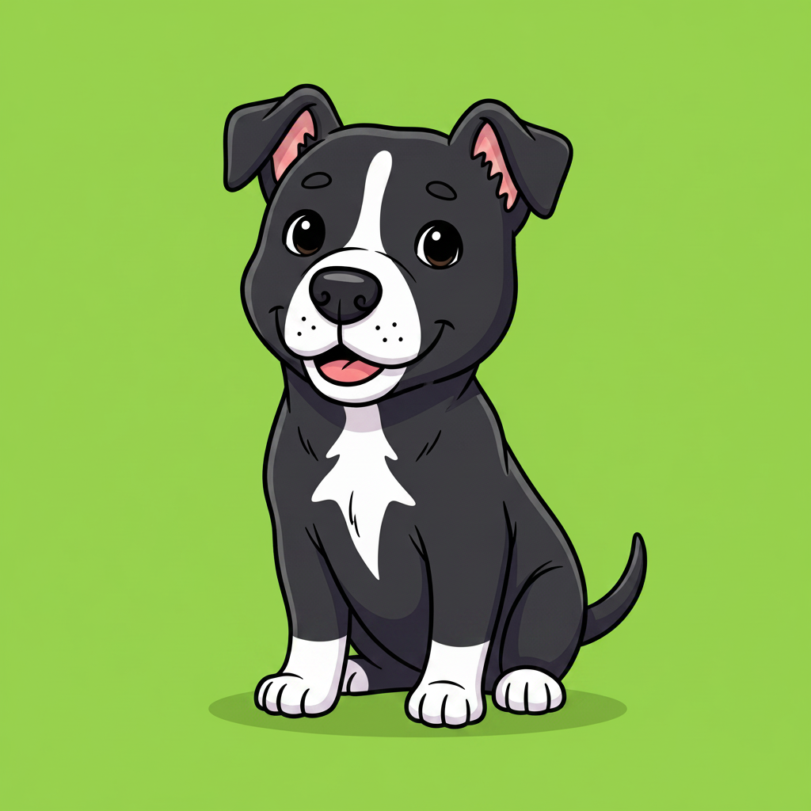

Left = the raw green image from the AI. The rest = the same image after the chroma-key renderer removes the green, shown over colorful backgrounds and a checkerboard (checkerboard = transparency). If the dog's edges are clean with no green halo and no leftover green/shadow, the approach works and we generate the Kling video.
